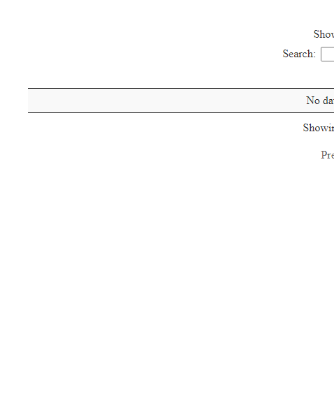

참여연대 검찰보고서
그 사건 그 검사 DB
그 사건 그 검사 DB
참여연대 웹사이트에 그 사건 그 검사 DB를 통해 검찰이 수사한 주요 사건, 사건별 담당 검사와 지휘부, 사건의 개요와 수사 결과, 검찰 기소 사건의 재판 결과를 파악할 수 있다.
게시판 - 검찰 진행상황
데이터 가져오기
게시판 번호, 사건명, 검찰처분연도, 진행상태를 데이터프레임으로 우선 정리한다.
library(tidyverse)
library(rvest)
pp_link_list <- list()
bb_list <- list()
Sys.setlocale("LC_ALL", "C")[1] "C"pp_url <- "http://www.peoplepower21.org/index.php"
for(i in 1:11){
# 게시판 페이지 1 .. 11
pp_link_list[[i]] <- paste0(pp_url, "?mid=CaseDB&page=", i)
# 각페이지별 document_srl 추출
bb_list[[i]] <- pp_link_list[[i]] %>%
read_html() %>%
html_nodes(xpath='//*[@id="board_list"]/table') %>%
html_table()
}
Sys.setlocale("LC_ALL", "Korean")[1] "LC_COLLATE=Korean_Korea.949;LC_CTYPE=Korean_Korea.949;LC_MONETARY=Korean_Korea.949;LC_NUMERIC=C;LC_TIME=Korean_Korea.949"bb_df <- map_df(bb_list, enframe) %>%
unnest(value) %>%
select(-name)
DT::datatable(bb_df) 
bb_df %>% write_rds("data/bb_df.rds")연도별 검찰처분 현황
bb_df %>%
count(`검찰 처분 연도`, `진행상태`, sort=TRUE) %>%
spread(`진행상태`, n, fill=0) %>%
mutate(`합계` = `수사중` + `재판중` + `종결`)Error: Must group by variables found in `.data`.
* Column `검찰 처분 연도` is not found.
* Column `진행상태` is not found.library(extrafont)
loadfonts()
bb_df %>%
count(`검찰 처분 연도`, `진행상태`, sort=TRUE) %>%
mutate(`진행상태` = factor(`진행상태`, levels = c("재판중", "수사중", "종결"))) %>%
ggplot(aes(x=`검찰 처분 연도`, y=n, color=`진행상태`)) +
geom_line() +
geom_point() +
theme_minimal(base_family = "NanumGothic") +
labs(x="", y="사건수",
title="검찰처분연도별 사건현황 추이",
caption="출처: 참여연대 그 사건 그 검사 DB")Error: Must group by variables found in `.data`.
* Column `검찰 처분 연도` is not found.
* Column `진행상태` is not found.사건 상세
사건 상세 크롤링 대상작업
가장 먼저 크롤링을 위한 링크를 받아 티블에 저장한다. 그리고 검찰처분연도와 진행상태를 사건바로가기와 연결하여 상세히 살펴볼 수 있도록 작업한다. 이를 위해서 먼저 크롤링 대상 추출작업을 선행한다.
pp_link_list <- list()
clean_link_list <- list()
Sys.setlocale("LC_ALL", "C")[1] "C"pp_url <- "http://www.peoplepower21.org/index.php"
for(i in 1:11){
# 게시판 페이지 1 .. 11
pp_link_list[[i]] <- paste0(pp_url, "?mid=CaseDB&page=", i)
# 각페이지별 document_srl 추출
clean_link_list[[i]] <- pp_link_list[[i]] %>%
read_html() %>%
html_nodes(xpath='//*[@id="board_list"]/table') %>%
html_nodes("a") %>%
html_attr("href")
}
Sys.setlocale("LC_ALL", "Korean")[1] "LC_COLLATE=Korean_Korea.949;LC_CTYPE=Korean_Korea.949;LC_MONETARY=Korean_Korea.949;LC_NUMERIC=C;LC_TIME=Korean_Korea.949"# 크롤링을 위한 링크 제작
crawling_dat <- tibble(
url = "http://www.peoplepower21.org",
link = flatten(clean_link_list) %>% unlist
)
crawling_df <- crawling_dat %>%
filter(!str_detect(link, "sort_index|comment")) %>%
mutate(crawling_url = str_c(url, link))Error: Problem with `filter()` input `..1`.
i Input `..1` is `!str_detect(link, "sort_index|comment")`.
x object 'link' not foundcrawling_df <- bind_cols(bb_df, crawling_df)Error in list2(...): object 'crawling_df' not foundcrawling_df %>%
select(-url, -link) %>%
mutate(crawling_url = paste0("<a href=", crawling_url,">", crawling_url,"</a>")) %>%
rename(`바로가기` = crawling_url) %>%
DT::datatable(escape=FALSE, options = list(scrollX=TRUE, autoWidth = TRUE,
columnDefs = list(list(width = '300px', targets = c(3)))))Error in select(., -url, -link): object 'crawling_df' not foundcrawling_df %>% write_rds("data/crawling_df.rds")Error in saveRDS(x, con, version = version): object 'crawling_df' not found사건 상세 크롤링
case_list <- list()
for(i in 1:nrow(crawling_df)) {
Sys.setlocale("LC_ALL", "C")
cat(i, " :", crawling_df$crawling_url[i], "\n")
case_list[[i]] <- crawling_df$crawling_url[i] %>%
read_html() %>%
html_nodes(xpath='//*[@id="content"]/div/div/div[1]/div[2]/table') %>%
html_table(fill = TRUE) %>%
.[[1]]
Sys.setlocale("LC_ALL", "Korean")
}Error in nrow(crawling_df): object 'crawling_df' not foundcase_list %>% write_rds("data/case_list.rds")
# case_detail_list <- list()
#
# for(i in 1:nrow(crawling_df)) {
# cat(i, ":\n")
#
# if(i == 86 | i==139 | i==143 |i==144 |i==152 | i==204) {
# # 86 - 세월호 건너뛰기
# } else {
# case_detail_list[i] <- case_list[[i]] %>%
# spread(X1, X2) %>%
# set_names(paste0("X", 1:8)) %>%
# select(-X5) %>%
# set_names(c("수사 경과 및 결과", "검찰 처분 연도", "비고", "사건개요", "수사 담당 검사 및 지휘라인", "약평", "재판 경과 및 결과"))
# }
# }
#
# case_list[[2]] %>%
# spread(X1, X2) %>%
# set_names(paste0("X", 1:8)) %>%
# select(-X5) %>%
# set_names(c("수사 경과 및 결과", "검찰 처분 연도", "비고", "사건개요", "수사 담당 검사 및 지휘라인", "약평", "재판 경과 및 결과"))
#